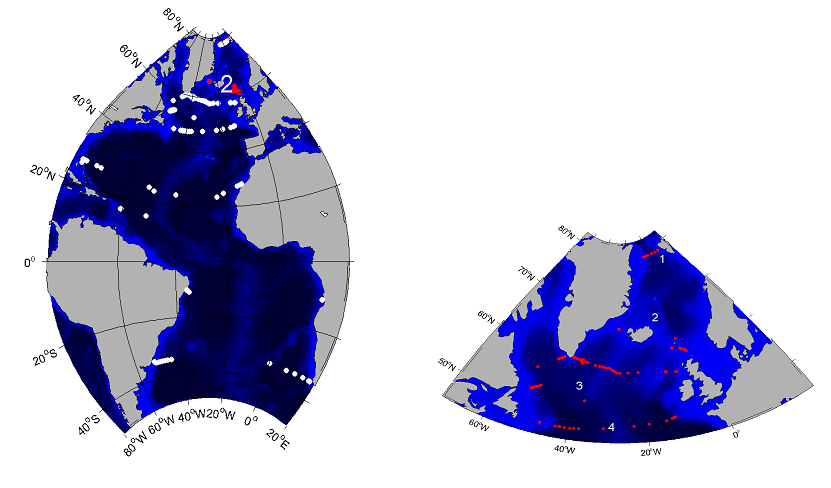
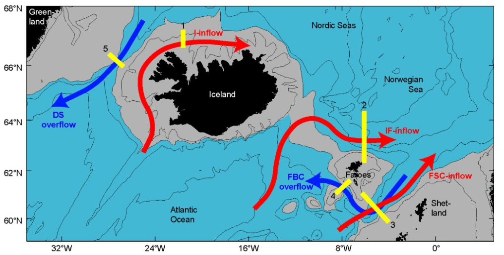
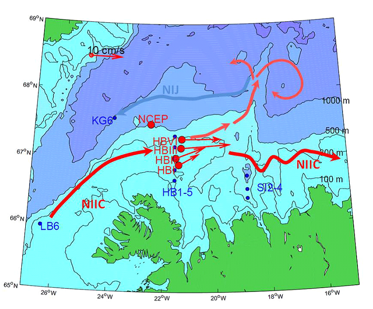
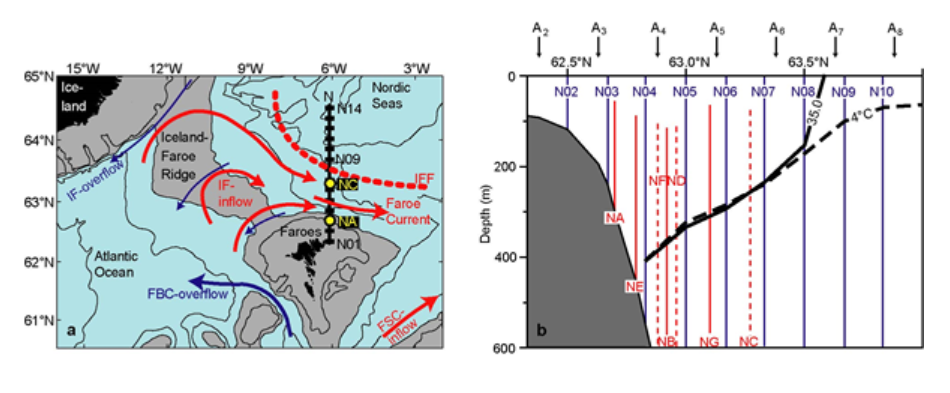
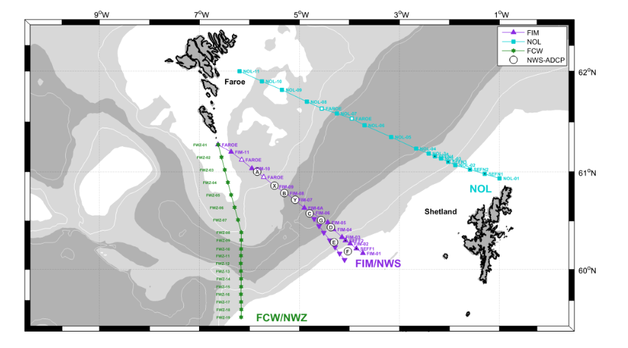
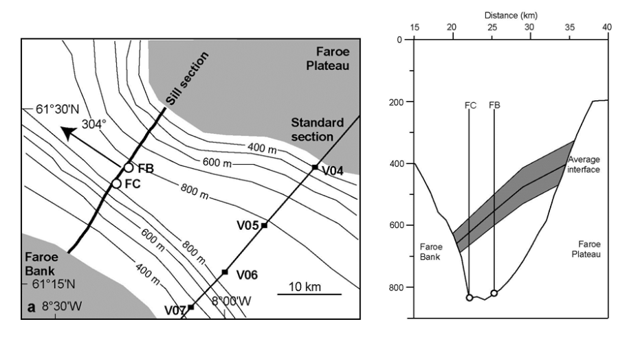
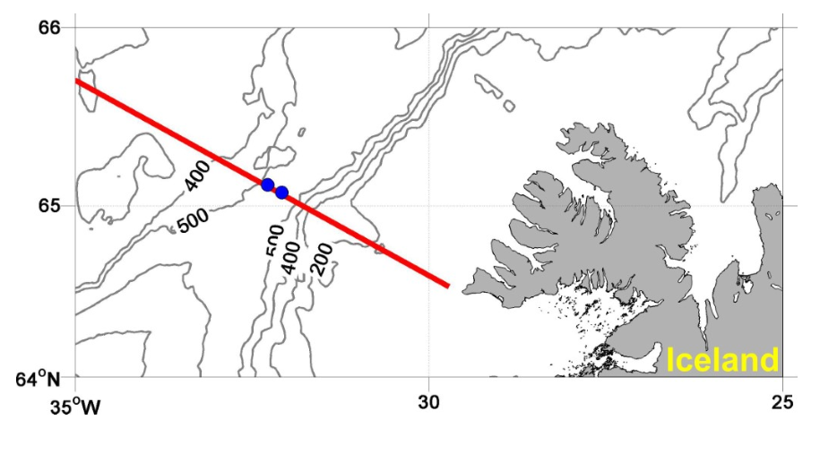
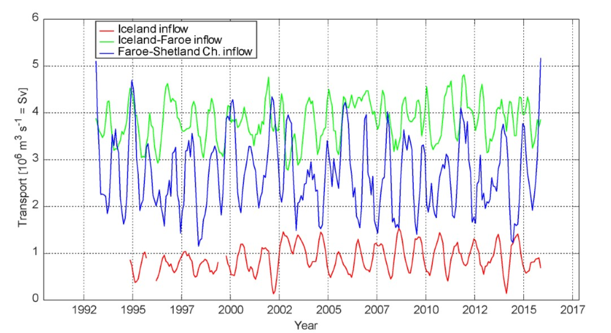
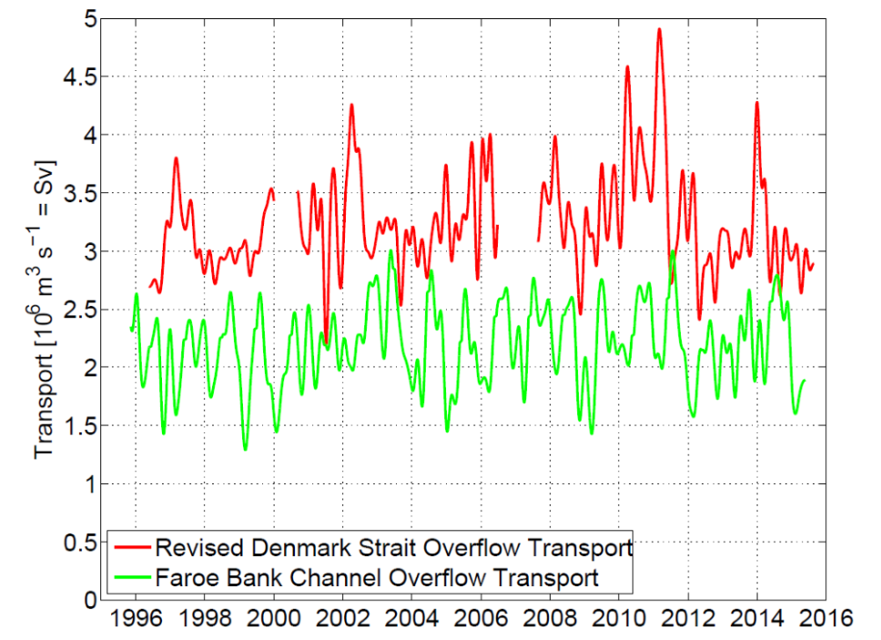

| |||||||||||||
|
2. GSR Greenland Scotland Ridge 3. OSNAP Overturning in the Subpolar North Atlantic Program 4. NOAC North Atlantic Changes 6. MOVE Meridional Overturning Variability Experiment 8. SAMBA-SAMOC South Atlantic Meridional Overturning Circulation
|
GSR Greenland Scotland Ridge
Scientific rationale for the Greenland Scotland Ridge (GSR) TMAs:The majority of the exchange between the Arctic Mediterranean and the other oceans occurs via the Nordic Seas. They are connected to the North Atlantic through passages between Greenland and the European continent, where an underwater ridge system called the Greenland-Scotland Ridge (GSR) limits the exchanges. Warm saline water flows from the Atlantic into the Nordic Seas and further into the Arctic. Along its way this water is modified by atmospheric influence and becomes denser, filling subsurface layers of the Arctic Ocean and the Nordic Seas. Dense water returns to the Atlantic through gaps in the GSR; these flows are known as "overflow".

Figure 1. The GSR TMAs (thick yellow lines marked with numbers) cover all three inflow branches (red arrows)
and the two major overflow branches (blue arrows). 1: North Icelandic Irminger Current (NIIC; I-inflow),
2: Faroe Current (IF-inflow), 3: Faroe-Shetland Channel inflow (FSC-inflow), 4: Faroe Bank Channel overflow (FBC-overflow),
5: Denmark Strait overflow (DS-overflow). Inflows to the Nordic SeasWarm water inflow is monitored north of Iceland (1 in Figure 1), north of the Faroe Islands (2 in Figure 1) and in the Faroe-Shetland Channel (3 in Figure 1). The monitoring of these branches was initiated in the mid 1990s and in the beginning data from CTD sections were combined with ADCP data to estimate the Atlantic Water transport. More recently, the estimates have also been using satellite altimetry observations (Berx et al, 2013) and bottom temperature observations (Hansen et al, 2015). These three branches transport large amounts of very warm water towards the Arctic Ocean and therefore are of huge importance to the climate in the wider Arctic region.

Figure 2. Location of hydrographic sections and current meter moorings used for producing the transport estimates for the Iceland inflow at array 1 in Figure 1, also called the North Icelandic Irminger Current (NIIC) (Jónsson and Valdimarsson, 2012). The HBVI mooring has more recently been added to the array.

Figure 3. The Faroe Current array across the Iceland-Faroe inflow to the Nordic Seas (array 2 in Figure 1) updated from Hansen et al (2015). (a) The region between Iceland and the Scottish shelf with grey areas shallower than 500 m. The IF-inflow crosses the Iceland Faroe Ridge, meets colder waters of Arctic origin in the Iceland-Faroe Front (IFF), and flows north of Faroes in the Faroe Current. The black line extending northwards from the Faroe shelf is a CTD standard section and yellow circles indicate the innermost (NA) and the outermost (NC) ADCP mooring sites on the section. (b) The southernmost part of section N with bottom topography (grey). Standard CTD stations are indicated by blue lines. ADCP profiles are marked by red lines that extend up to the depth, at which 50% of the daily averaged profiles are valid with continuous lines indicating the long-term sites. Altimetry points are marked by black arrows and the thick black lines indicate the average depth of the 4°C isotherm (dashed) and the 35.0 isohaline (continuous) on the section. See Hansen et al (2015) for more details.

Figure 4. Map of the Faroe-Shetland Channel inflow array, array 3 in Figure 1. The array consists of a number of ADCPs deployed at key locations along the Fair Isle-Munken (FIM) hydrographic section (also called NWS), and traditional ship-based observations along FIM and Nolsoy-Flugga (NOL) sections. The number of instruments varies with time, but sites B, C, D and E are those with most data. These observations are supplemented with altimeter-based observations of SSH which have been calibrated to give a measure of volume transport (Berx et al, 2013). OverflowsVolume fluxes and temperatures of the two major overflow branches in Denmark Strait and in the Faroe Bank Channel are captured by moored acoustic current profilers and hydrographic sensors. Measurements at these locations persist since the 1990ies (Hansen and Østerhus, 2007) and thus already provide information on decadal variability (Hansen et al., 2016). The overflow through Denmark Strait contributes the largest part of the dense water outflow from the Nordic Seas, but the flow through the Faroe Bank Channel includes the densest waters flowing into the North Atlantic. Including the waters entrained downstream of the ridge the dense overflows are the main contributors to North Atlantic Deep Water and the deep limb of the Meridional Overturning Circulation.

Figure 5. Faroe Bank Channel Overflow (FBC-overflow, array 4 in Figure 1). The array is based on two upward-looking 75-khz ADCPs and a standard CTD section. Left panel: Map with sites of moored ADCPs (circles) and CTD standard stations (black squares). Right panel: Cross-section sketch with ADCP sites indicated. The shaded area indicates the typical range of the interface depth along the sill section.

Figure 6. Denmark Strait Overflow (DS-overflow, array 5 in Figure 1). The array is based on two upward-looking ADCPs with hydrographic sensors (blue dots) and a standard CTD section (red line). Data products: volume transport time series.Figure 7. Transport time series of the Iceland inflow (Array 1 - red), the Iceland-Faroe inflow (Array 2 - green) and the Faroe-Shetland Channel inflow (Array 3 - blue). The time series are three months running mean calculated from monthly values.

Figure 8. Transport time series of the Faroe Bank Channel overflow (green) and the Denmark Strait Overflow (red), based on 90-days low-pass filtered data. Gaps in the Denmark Strait time series have been filled using SSA techniques. From Jochumsen et al. (2017). Transport data of the five sub-arrays can be downloaded here:
1: North Icelandic Irminger Current (NIIC): OS_2_GSR_1_NIIC_transport_1994_2016_D.nc The array instrument data are available by request from the data representatives.
PublicationsBerx, B., Hansen, B., Østerhus, S., Larsen, K.M., Sherwin, T., Jochumsen, K. (2013) Combining in-situ measurements and altimetry to estimate volume, heat and salt transport variability through the Faroe Shetland Channel. Ocean Science, 9 (4): 639–654, doi:10.5194/os-9-639-2013. Fischer, J., J. Karstensen, R. Zantopp, M. Visbeck, A. Biastoch, E. Behrens, C. Böning, D. Quadfasel , K. Jochumsen, H. Valdimarsson, S. Jónsson, S. Ba-con, N. P. Holliday, S. Dye, M. Rhein, and C. Mertens (2015): Intra-seasonal variability of the Deep Western Boundary Current in the western subpolar North Atlantic. Progress in Oceanography, 132, pp. 233-249, doi:10.1016/j.pocean.2014.04.002. Jochumsen, K., M. Moritz, N. Nunes, D. Quadfasel, K. M. Larsen, B. Hansen, H. Valdimarsson and S. Jonsson (2017): Revised transport estimates of the Denmark Strait Overflow, Journal of Geophysical Research J. Geophys. Res., 122, 3434–3450, doi:10.1002/2017JC012803. Jochumsen, K., M. Köllner, D. Quadfasel, S. Dye, B. Rudels and H. Valdimarsson (2015): On the origin and propagation of Denmark Strait Overflow Water Anomalies in the Irminger Basin, Journal of Geophysical Research, 120(3), pp. 1841–1855, doi:10.1002/2014JC010397. Jochumsen, K., D. Quadfasel, H. Valdimarsson and S. Jonsson (2012): Variability of the Denmark Strait overflow: Moored time series from 1996-2011. Journal of Geophysical Research, 17, C12003, doi:10.1029/2012JC008244. Hansen, B., Poulsen, T., Húsgarð Larsen, K. M., Hátún, H., Østerhus, S., Darelius, E., Berx, B., Quadfasel, D., and Jochumsen, K.: Atlantic water flow through the Faroese Channels, Ocean Sci., 13, 873-888, https://doi.org/10.5194/os-13-873-2017, 2017. Hansen, B., K. Larsen, H. Hátún, and S. Østerhus (2016), A stable Faroe Bank Channel overflow 1995-2015, Ocean Sci., 12, doi:10.5194/os-12-1205-2016. Hansen, B., K. M. H. Larsen, H. Hátún, R. Kristiansen, E. Mortensen, and S. Østerhus (2015), Transport of volume, heat, and salt towards the Arctic in the FaroeCurrent 1993–2013, Ocean Sci., 11, 743–757, doi:10.5194/os-11-743-2015. Hansen, B., and S. Østerhus (2007), Faroe Bank Channel overflow 1995-2005, Prog. Oceanogr., 75, 817–856, doi:10.1016/j.pocean.2007.09.004. Hansen, B., and S. Østerhus (2000), North Atlantic-Nordic Seas exchanges, Prog. Oceanogr., 45, 109–208. Jónsson, S., and Valdimarsson, H. 2012. Water mass transport variability to the North Icelandic shelf, 1994–2010. ICES Journal of Marine Science, 69: 809–815, doi:10.1093/icesjms/fss024 Macrander, A., U. Send, H. Valdimarsson, S. Jónsson, and R. H. Käse (2005), Interannual changes in the overflow from the Nordic Seas into the Atlantic Ocean through Denmark Strait, Geophys. Res. Lett., 32, L06606, doi:10.1029/2004GL021463. Østerhus, S., Woodgate, R., Valdimarsson, H., Turrell, B., de Steur, L., Quadfasel, D., Olsen, S. M., Moritz, M., Lee, C. M., Larsen, K. M. H., Jónsson, S., Johnson, C., Jochumsen, K., Hansen, B., Curry, B., Cunningham, S., and Berx, B.: Arctic Mediterranean Exchanges: A consistent volume budget and trends in transports from two decades of observations, Ocean Sci. Discuss., https://doi.org/10.5194/os-2018-114, in review, 2018. | ||||||||||||